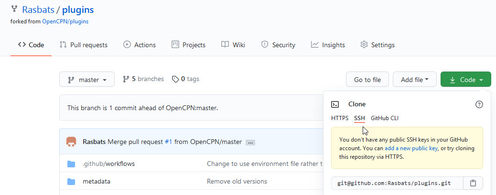
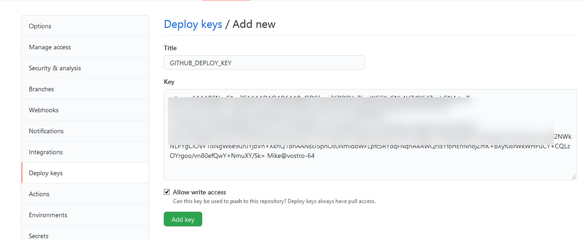
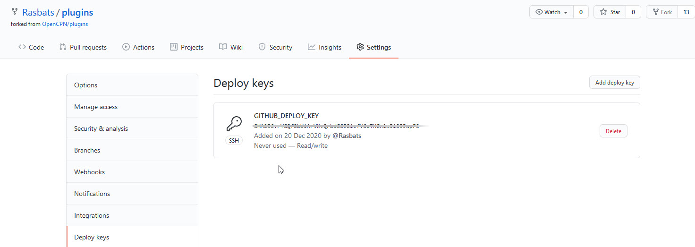

Github OpenCPN/plugins fork
The shipdriver workflow requires that developer has cloned OpenCPN/plugins. During builds, metadata files are automatically pushed to this clone. This page describes how this is configured.
The result of the configuration is the two environment variables GIT_REPO and GIT_KEY_PASSWORD. These variables are used when configuring builders.
If maintaining several plugins, this is a one time setup. If there already is a plugin setup according to steps below, copy the files build-deps/username.enc and build-deps/username.pub to the current plugin and use the same values for GIT_REPO and GIT_KEY_PASSWORD.
Otherwise, proceed as follows, First check the pre-requisites:
-
A plugin. Here, TideFinder is used as example.
-
A fork of https://github.com/OpenCPN/plugins.git on Github.
And then:
-
-
Windows users are best off using git-bash. However, invoking the python scripts used here does not work out of the box. In git-bash, use the command
alias python='winpty python.exe'as a temporary work around before taking more actions. See the Stack overflow question for more info including a more permanent fix. -
In the OpenCPN/plugins fork, make sure there is a remote named upstream. A oneliner fixes this:
$ git ls-remote --exit-code upstream &>/dev/null || \ git remote add upstream https://github.com/OpenCPN/plugins.git
-
-
Create a branch called auto in the OpenCPN/plugins fork:
-
For builds targeting the master catalog: drop possible existing auto branch and create a new on top of master:
$ git branch -D auto ① $ git remote update upstream ② $ git checkout -b auto upstream/master ③ $ git push -f origin auto:auto ④
-
Builds targeting the beta catalog is handled in a similar way:
$ git branch -D auto ① $ git remote update upstream ② $ git checkout -b auto upstream/Beta ③ $ git push -f origin auto:auto ④
① Remove any existing auto branch, disregard error messages.
② Make sure our data about the github catalog is updated.
③ Create a new branch on top of master or Beta
④ Unconditionally overwrite the github branch
-
-
You will need the ssh url to your OpenCPN/plugins fork, something like
git@github.com:Rasbats/plugins.git. This can be found in the Github UI:Or, in the OpenCPN/plugins fork, on the command line using
git config --get remote.origin.url -
Run python ci/new-credentials in the TideFinder repo. The script will ask for the ssh url to your plugins fork repo and a secret password.
If the script does not complete on Windows, check that the alias python= …command mentioned in Preparations has been executed. -
Dont forget the password…
-
The script will create an encrypted private + a public key named username.enc and username.pub in the TideFinder build-deps directory. Commit and push these keys to Github:
$ git add build-deps/*.enc build-deps/*.pub $ git commit -m "Add git deployment key." $ git push origin master:master
-
In your forked "plugins" repository Register the new public key (displayed by new-credentials) as a deployment key with write permissions (Allow write access) on your github OpenCPN/plugins fork repo (in Settings | Deploy keys):

After adding the key things should look like:

Note that despite images, the public key is indeed public; there is no need to keep it secret.
-
Take a note about GIT_REPO and GIT_KEY_PASSWORD, they are used in later configuration steps.